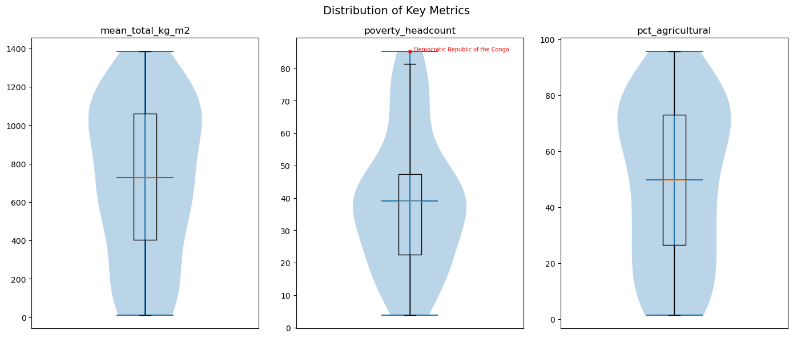
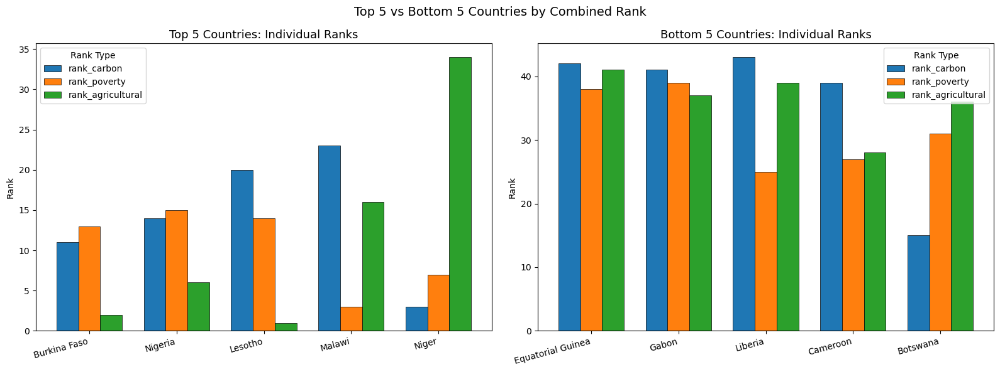
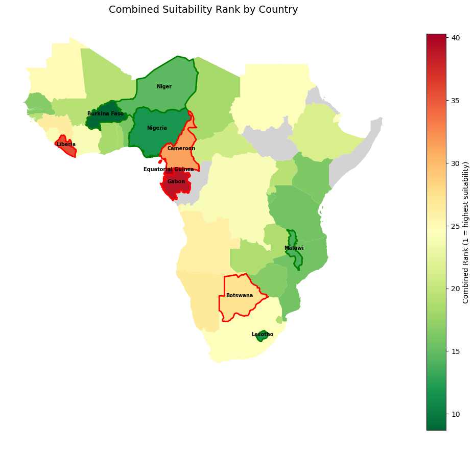

Exploratory Analysis of Carbon Sequestration Suitability in Sub-Saharan Africa
Hover over a country to view its value for the respective layers. Toggle between layers using the panel in the bottom left.
For the Suitability Rank layer, the top five countries (low baseline carbon, high poverty, high agricultural land %) and the bottom five countries are highlighted green and red respectively.
Link to Python notebook detailing how the geoJson file was processed.
Project Overview
Carbon sequestration is the act of removing carbon dioxide from the atmosphere to store it in either a natural or artifical sink. Carbon dioxide, as one of the greenhouse gases, worsens the impact of climate change. Sub-Saharan Africa is one of the regions that are disproportionately impacted by climate change, with harshening weather conditions negatively affecting agriculture in the area. Climate change exacerbates the existing poverty faced by people who rely on their farms to support their family.
This project takes a look at the baseline biological carbon sequestration in Sub-Saharan Africa via soil organic carbon and net primary production (NPP). Additionally, it considers the value of implementing carbon crediting programs for the benefit of smallholder farmers based on the country's poverty level.
The project is inspired by my previous work with the Penn State PlantVillage lab, which has carbon capture cubes as one of its focuses to support smallholder farmers in Africa. Carbon capture cubes combine agroforestry, biochar, and mycorrhizal fungi to improve soil quality while sinking carbon. This project does not delve deep into calculating the carbon sinking potential of this practice, as the amount of carbon stored is dependent on the species of plant and fungi used, as well as the biochar production method. Future research to review these factors would highlight the most efficient species and methodology would be beneficial.

Data Sources
My primary data sources are the Food and Agriculture Organization's WAter Productivity through Open-access of Remotely sensed derived data (WaPOR) and International Soil Reference and Information Centre (ISRIC). I utilized WaPOR for their monthly net primary productivity (NPP) raster data, which serve as the basis for the aboveground carbon stock. For belowground carbon, ISRIC provides soil organic carbon (gC/kg) and bulk density (kg/m3) layers, which are separated into six soil depth layers. Additionally, ISRIC provides agricultural land data which is used to assess arable land suitability. To aid in the analysis, I also used a vector layer of Sub-Saharan country boundaries from Amazon Web Services' Natural Earth dataset and country-level poverty headcount data from the World Bank API. All data processing was done using Amazon Web Services (AWS)'s E3 instance, with data stored in an S3 bucket. Python was used for data processing and analysis.
Interactive Map Details
The map was made using Leaflet and Javascript.
I referenced skills learned from GUS 8068: Webmapping and GIS on how to best visualize my data.
For example, I learned how to integrate geoJSON data in an interactive map from the course, so I was able to use my existing dataset and visualize it here with Leaflet.
I took inspiration from example code featured in the course as well for features such as the info window, that updates depending on the polygon the mouse is hovered over.
I also learned how to implement quantile classification to create the choropleth maps for each layer.
Overall the introductory material on Javascript gave me a better understanding on how to navigate the Leaflet documentation for adding in features to make this map a positive experience for the user.
Creating an interactive map for this dataset makes the data much easier to view as the user can click each country and find its associated value for the current layer.
The static choropleth map, which is featured below, gives a general overview of the spatial clusters but does not give as much information compared to an interactive map.
More data can be added to a static map, but after a certain point it can become cluttered.
An interactive map keeps information organized and lets users highlight values they're specifically interested in.
Summary Statistics and Results
| Statistic | Poverty Headcount (%)* | Total SOC (TgC) | Mean SOC (kg/m²) | Total NPP (TgC) | Mean NPP (kg/m²) | Total Carbon (TgC) | Mean Total (kg/m²) | Agricultural (%) | Agricultural Area (km²) |
|---|---|---|---|---|---|---|---|---|---|
| Mean | 39.06 | 8.69 | 21.25 | 272.03 | 695.10 | 272.03 | 716.35 | 48.97 | 29.07 |
| Std | 21.21 | 9.80 | 15.29 | 391.26 | 405.51 | 391.26 | 410.55 | 28.62 | 29.30 |
| Min | 3.80 | 0.04 | 2.94 | 0.17 | 6.17 | 0.17 | 11.02 | 1.40 | 0.04 |
| 25% | 22.45 | 1.73 | 10.58 | 30.88 | 395.32 | 30.88 | 402.93 | 26.45 | 4.29 |
| 50% | 39.00 | 4.87 | 18.92 | 141.19 | 703.64 | 141.19 | 728.55 | 49.84 | 20.56 |
| 75% | 47.35 | 12.34 | 25.94 | 311.19 | 1,029.82 | 311.19 | 1,060.47 | 73.13 | 47.62 |
| Max | 85.30 | 37.26 | 61.34 | 2,217.08 | 1,379.76 | 2,217.08 | 1,385.41 | 95.79 | 99.65 |
*Poverty headcount data is unavailable for South Sudan, Somalia, Eritrea, and Republic of the Congo.

The boxplot shows that there are no outliers for each of the variables apart from D.R. Congo, which contributes to the right skew of poverty rate distribution. The violin plot offers a different view of the carbon and arable land distributions, showing the slight left skew of overall normal distributions.
| Country | Mean Carbon Density (kg/m²) | Poverty Headcount (%) | Agricultural (%) |
|---|---|---|---|
| Top 5 — Lowest Carbon + Highest Poverty + Highest Agricultural % | |||
| Burkina Faso | 360.02 | 42.1% | 88.39% |
| Lesotho | 656.00 | 41.9% | 95.79% |
| Nigeria | 545.66 | 41.8% | 83.37% |
| Malawi | 772.66 | 75.4% | 67.80% |
| Niger | 25.20 | 60.5% | 22.67% |
| Bottom 5 — Highest Carbon + Lowest Poverty + Lowest Agricultural % | |||
| Botswana | 555.57 | 21.4% | 9.95% |
| Cameroon | 1171.85 | 26.7% | 33.94% |
| Liberia | 1385.41 | 33.6% | 7.96% |
| Gabon | 1265.96 | 3.8% | 9.01% |
| Equatorial Guinea | 1340.63 | 8.8% | 5.56% |
Values are bolded based on their lowest/highest value in each column.


The top five suitable countries are Burkina Faso, Lesotho, Nigeria, Malawi, and Niger. Of the top five, Burkina Faso, Nigeria, and Niger are spatially close to each other. For Burkina Faso and Nigeria, they both have a larger percentage of agricultural land (98% and 96% respectively) and similar poverty rate (42% for both). Though Burkina Faso's lower existing carbon of 360 kg/m2 puts it above Nigeria for suitability.
The bottom five suitable countries are Equatorial Guinea, Gabon, Liberia, Cameroon, and Botswana. Interestingly, Equatorial Guinea, Gabon, and Cameroon are located close to countries that ranked higher, such as Nigeria and Niger. Of the bottom five, Botswana is the most interesting, as is has a carbon rank better than four of the top five countries. Howver, Botswana's lower poverty and agricultural land rank skews it to the bottom five.
Overall, countries that ranked closer together tend to be spatially close, with clustering patterns visible in the choropleth map.